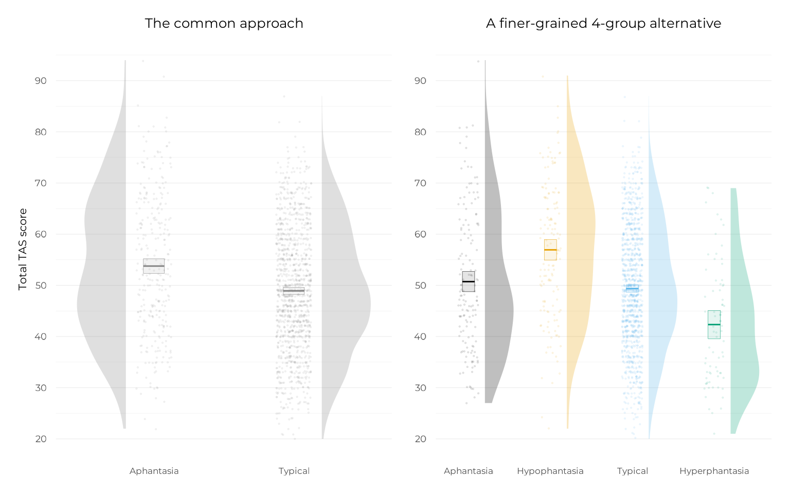
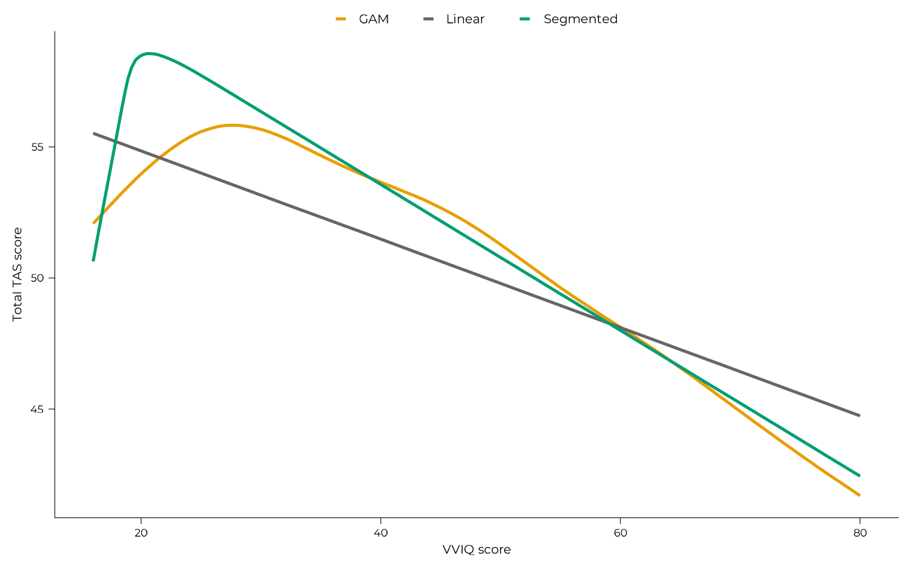
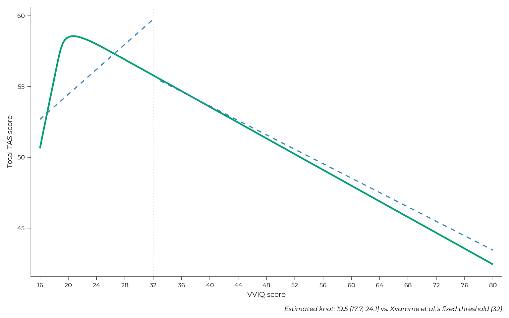
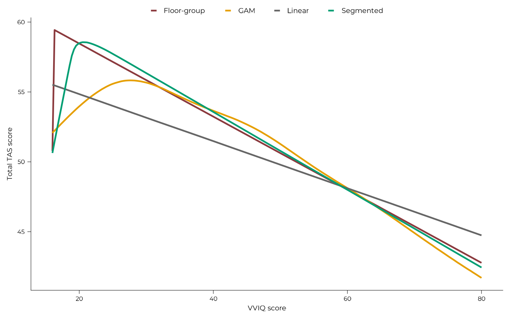

library(aphantasiaEmotions)
library(ggplot2)
library(patchwork)
# Models and results are loaded directly from their saved artefacts in the
# vignette, and explicitly never refitted (this is merely to protect the
# website). The "pkg" shorthand will be used throughout to point to the files of
# the aphantasiaEmotions package.
# See the Implementation Notes page for how these models were actually built.
pkg <- "aphantasiaEmotions"
refit <- "never"Given VVIQ and TAS-20 scores for 1478 participants pooled across five studies, what is the best way to describe their relationship? This page walks through that question as it was actually answered, not by picking one model and reporting it, but by testing an escalating sequence of increasingly flexible approaches against each other and letting the evidence decide. The answer that comes out the other end is a genuine surprise: the model that wins is not the most sophisticated one, but the simplest one that captures the right structure. That model, and why it wins, is the subject of the next page; this one is about the comparison itself.
Every model on this page converged cleanly and passed its posterior predictive checks. The model diagnostics page has the full detail for each one; this page links to the relevant section as each model is introduced, rather than to establish convergence here.
Where this comparison came from
The original plan for this study used two models: a categorical comparison across the four established VVIQ groups — aphantasia, hypophantasia, typical, hyperphantasia — following Reeder et al. (2024), and a Bayesian generalised additive model (GAM) as a continuous, non-linear alternative. Both are still part of the comparison below.
The rest of this page exists because of peer review. One reviewer raised three points worth stating plainly, since they shaped everything that follows:
- The categorical model is, functionally, already a non-linear model. Cutting a continuum into groups lets each group take its own mean, which is a more flexible move than it might look. It should not be treated as a “linear” baseline to contrast against the GAM.
- A genuinely naive linear model was missing from the comparison, and belonged there as the actual continuous baseline.
- More generally, a single categorical model and a single GAM is not a
comparison. A proper one would fit several candidate models
(the reviewer specifically suggested spline approaches like MARS, via
the
earthpackage, and mixture regression, viaflexmix) and compare them quantitatively.
Point 3 is why this page exists in its current form. The spline suggestion led directly to the segmented model described below; the mixture-regression suggestion is still open, and is discussed on the For those who come after page.
The naive baseline
The most common approach in the aphantasia literature is a single threshold, typically VVIQ 32, splitting the sample into “aphantasics” and everyone else:
lm_categorical_2g <- fit_brms_model(
formula = tas ~ vviq_group_2,
data = all_data,
prior = brms::prior(normal(0, 20), class = "b"),
file = system.file("models", "lm_categorical_2g_tot.rds", package = pkg),
file_refit = refit
)It is a reasonable starting point, and exactly what point 2 above asked for: a true baseline, not a straw-man. (Convergence and posterior predictive check: model diagnostics §Categorical, 2 groups.)
p_2g <-
plot_group_violins(
tas ~ vviq_group_2,
data = all_data,
y_lab = "Total TAS score",
base_size = 16,
violin_flip = 1,
violin_nudge = c(-0.2, 0.2)
) +
scale_x_aphantasia(add = c(0.7, 0.7)) +
ggplot2::scale_color_manual(values = c("grey50", "grey50"), guide = "none") +
ggplot2::scale_fill_manual(values = c("grey50", "grey50"), guide = "none") +
ggplot2::labs(title = "The common approach")
p_4g <-
plot_group_violins(
tas ~ vviq_group_4,
data = all_data,
y_lab = NULL,
base_size = 16
) +
scale_x_aphantasia(add = c(0.4, 0.7)) +
scale_discrete_aphantasia() +
ggplot2::labs(title = "A finer-grained 4-group alternative")
p_2g + p_4g
A finer-grained alternative
Splitting the aphantasia range itself, separating complete aphantasia (VVIQ = 16) from hypophantasia, visibly recovers structure the coarser 2-group split misses (right panel above):
lm_categorical_4g <- fit_brms_model(
formula = tas ~ vviq_group_4,
data = all_data,
prior = brms::prior(normal(0, 20), class = "b"),
file = system.file("models", "lm_categorical_4g_tot.rds", package = pkg),
file_refit = refit
)This is the study’s original categorical model, following Reeder et al. (2024)’s four-group framework, and it is genuinely informative: as the panel shows, it differentiates the sample far more than the naive threshold does. (Convergence and posterior predictive check: model diagnostics §Categorical, 4 groups.)
It is also, as the reviewer pointed out, already a non-linear model in its own right, which is worth keeping in mind for what follows, since the continuous models below are not simply “adding” non-linearity that the categorical model lacked; they are asking whether a different kind of non-linearity describes the data better.
Continuous alternatives
Three continuous models were compared against each other and against the categorical models above: a plain linear model, a Bayesian GAM (the study’s original planned non-linear approach), and a segmented (piecewise) model with an estimated breakpoint (the reviewer’s suggestion). Here are the specifications of the linear and GAM models:
lm_linear <- fit_brms_model(
formula = tas ~ vviq,
data = all_data,
prior = brms::prior(normal(0, 20), class = "b"),
file = system.file("models", "lm_linear_tot.rds", package = pkg),
file_refit = refit
)
gam_tot <- fit_brms_model(
formula = tas ~ s(vviq),
data = all_data,
prior = brms::prior(normal(0, 20), class = "b"),
file = system.file("models", "gam_tot.rds", package = pkg),
file_refit = refit
)The segmented model is the direct methodological response to the
spline suggestion above. Its breakpoint was first located with
earth::earth(tas ~ vviq, data = all_data), a fast,
frequentist spline search which found a single knot at VVIQ = 24. That
value then became the starting point (not the final answer) for a proper
Bayesian estimate: a non-linear model that estimates the breakpoint
itself, with full posterior uncertainty, rather than treating
earth’s point estimate as fixed.
Because the cached model below is loaded with
file_refit = "never", it will not notice on its own if the
underlying data changes. As a safeguard, the same fast
earth search that originally seeded this model’s prior is
re-run here, live, every time this page builds, and compared against the
knot that was actually used at fit time. If a future update to the
pooled dataset moves the knot earth finds, this will fail
loudly rather than silently describing stale data:
check_knot_still_matches(all_data, seed_knot = 24)Here is the segmented model itself (note the prior on the knot
k, guided by earth initial fixed
estimation):
segmented_estimated <- fit_brms_model(
formula = brms::bf(
tas ~ a + b1 * vviq + b2 * (vviq - k) * step(vviq - k),
a ~ 1, b1 ~ 1, b2 ~ 1, k ~ 1,
nl = TRUE
),
data = all_data,
prior = c(
brms::prior(normal(0, 20), nlpar = "a"),
brms::prior(normal(0, 20), nlpar = "b1"),
brms::prior(normal(0, 20), nlpar = "b2"),
brms::prior(normal(24, 10), nlpar = "k")
),
file = system.file(
"models", "segmented_estimated_knot_tot.rds", package = pkg),
file_refit = refit
)Getting this specific model to fit correctly was not entirely straightforward, see the Implementation Notes page for the two real problems this formula ran into and how they were resolved.
Here is a visual comparison of the three continuous models above:
pred_grid <- data.frame(vviq = seq(16, 80, length.out = 200))
pred_linear <- as.data.frame(marginaleffects::predictions(lm_linear, newdata = pred_grid))
pred_gam <- as.data.frame(marginaleffects::predictions(gam_tot, newdata = pred_grid))
pred_segmented <- as.data.frame(marginaleffects::predictions(segmented_estimated, newdata = pred_grid))
pred_linear$model <- "Linear"
pred_gam$model <- "GAM"
pred_segmented$model <- "Segmented"
all_preds <- rbind(
pred_linear[, c("vviq", "estimate", "model")],
pred_gam[, c("vviq", "estimate", "model")],
pred_segmented[, c("vviq", "estimate", "model")]
)
model_colors <- c("Linear" = "grey40", "GAM" = "#E69F00", "Segmented" = "#009E73")
ggplot2::ggplot(all_preds, ggplot2::aes(x = vviq, y = estimate, color = model)) +
ggplot2::geom_line(linewidth = 0.9) +
ggplot2::scale_color_manual(values = model_colors) +
ggplot2::labs(x = "VVIQ score", y = "Total TAS score", color = NULL) +
theme_pdf(base_size = 16)
The three continuous models fitted well. Here are their convergence and posterior predictive checks: linear, GAM, segmented, estimated knot.
Comparing all single-level models
All models were directly compared against each other via approximate
leave-one-out cross-validation (LOO). This comparison uses
elpd_diff, i.e., the difference in expected log point-wise
predictive density between two models, with its standard error, which is
the Bayesian analogue of an AIC/BIC-based comparison and the standard
model-selection criterion in the brms/loo
ecosystem our models are fit in (we point interested readers to Ari
Vehtari’s own FAQ for a fuller explanation of how to interpret
it).
comparison_table <- readRDS(
system.file("results", "comparison_all_models_tot.rds", package = pkg)
)
comparison_table |> knitr::kable(digits = 2)| model | elpd_diff | se_diff | n_high_pareto_k |
|---|---|---|---|
| segmented_estimated | 0.00 | 0.00 | 0 |
| floor_group_additive | -1.85 | 1.84 | 0 |
| gam | -4.53 | 3.41 | 0 |
| linear | -22.28 | 7.67 | 0 |
| categorical_4_groups | -29.66 | 7.64 | 0 |
| categorical_2_groups | -48.37 | 10.07 | 0 |
(Table restricted to single-level models fit on the total TAS score. The floor-group additive model, introduced below and covered fully on the next page, was also given a multilevel treatment to check its robustness across studies; that comparison is not shown here, since it would not be a fair comparison against models that were never given the same multilevel treatment.)
The categorical and 2-group models are clearly outperformed. Among the continuous models, the segmented (fixed and estimated) and floor-group models cluster tightly at the top, well within one standard error of each other, genuinely indistinguishable on statistical grounds alone. The GAM trails this top cluster by a small but non-negligible margin. The plain linear model, despite being continuous like the GAM and segmented models, is decisively worse and closer in magnitude to the categorical models’ gap than to the top cluster’s. This is consistent with the VVIQ floor itself (complete aphantasics) being a structural discontinuity: a model with no mechanism for a discontinuity should, and does, fit visibly worse than every model that has one.
The 4-group categorical model and the GAM were this study’s original, primary models. Their full results, including the same detailed contrast and slope figures from the original manuscript, are kept on the Superseded models page rather than dropped. They are genuinely informative models we checked thoroughly, even though the model-comparison arc above now prefers the floor-group and segmented alternatives.
The segmented model’s own numbers
The segmented model’s estimated breakpoint and slopes are detailed here, since it performs well throughout this comparison and directly echoes the pattern in previous literature described in the next section.
The formula of the segmented model parametrises the model in four
pieces: an intercept a, a pre-knot slope b1, a
change in slope after the knot b2 (not the
post-knot slope itself), and the knot location k.
Extracting these directly:
segmented_fixef <- brms::fixef(segmented_estimated)
# b1 + b2 is a derived quantity: its own SE/CrI cannot be obtained by
# summing b1's and b2's columns from fixef() directly, since that would
# ignore their posterior covariance. Instead, sum the two parameters'
# posterior draws together first, then summarise the resulting draw-level
# distribution the same way brms does for any other parameter.
post_knot_draws <-
brms::as_draws_df(segmented_estimated) |>
dplyr::transmute(post_knot_slope = .data$b_b1_Intercept + .data$b_b2_Intercept)
post_knot_summary <- data.frame(
Estimate = mean(post_knot_draws$post_knot_slope),
Est.Error = stats::sd(post_knot_draws$post_knot_slope),
Q2.5 = stats::quantile(post_knot_draws$post_knot_slope, 0.025),
Q97.5 = stats::quantile(post_knot_draws$post_knot_slope, 0.975)
)
segmented_summary <- rbind(
segmented_fixef["a_Intercept", ],
segmented_fixef["b1_Intercept", ],
segmented_fixef["b2_Intercept", ],
post_knot_summary,
segmented_fixef["k_Intercept", ]
)
segmented_summary <- data.frame(
Parameter = c(
"Intercept (a)", "Pre-knot slope (b1)",
"Slope change at knot (b2)", "Post-knot slope (b1 + b2)", "Knot (k)"
),
Estimate = segmented_summary[, "Estimate"],
"Est. Error" = segmented_summary[, "Est.Error"],
"95% CrI" = paste0(
"[", round(segmented_summary[, "Q2.5"], 2), ", ",
round(segmented_summary[, "Q97.5"], 2), "]"
),
check.names = FALSE
)
segmented_summary |> knitr::kable(digits = 2)| Parameter | Estimate | Est. Error | 95% CrI |
|---|---|---|---|
| Intercept (a) | 9.82 | 16.52 | [-25.67, 36.86] |
| Pre-knot slope (b1) | 2.55 | 1.02 | [0.9, 4.76] |
| Slope change at knot (b2) | -2.83 | 1.02 | [-5.03, -1.19] |
| Post-knot slope (b1 + b2) | -0.28 | 0.02 | [-0.33, -0.23] |
| Knot (k) | 19.91 | 1.68 | [17.74, 24.09] |
Reading these together: the pre-knot slope (b1) is
positive (TAS-20 rises with VVIQ below the knot) while the post-knot
slope (b1 + b2) is negative, consistent with the descending
arm visible in the overlay figure above. The knot itself
(k) lands close to the earth-seeded starting
value, which is expected: earth’s search is a reasonable
first guess precisely because it already looks at the same discontinuity
the Bayesian model then estimates more carefully, with full posterior
uncertainty rather than a single point value. However, the Bayesian
model estimates that k sits below earth’s
value, probably closer to 20 than 24.
Validating against the literature: Kvamme et al.
Kvamme et al. (2026) published a
related but distinct analysis of a large, independent sample (the
kvamme component of this project’s own pooled data): rather
than a single continuous model, they split their sample at a fixed VVIQ
= 32 threshold and fit two separate linear regressions, one on each
side.
kvamme_data <- all_data |> dplyr::filter(study == "kvamme")
kvamme_aphant <- kvamme_data |> dplyr::filter(vviq_group_2 == "aphantasia")
kvamme_typical <- kvamme_data |> dplyr::filter(vviq_group_2 != "aphantasia")
lm_kvamme_aphant <- lm(tas ~ vviq, data = kvamme_aphant)
lm_kvamme_typical <- lm(tas ~ vviq, data = kvamme_typical)
r_aphant <- sqrt(summary(lm_kvamme_aphant)$r.squared) * sign(coef(lm_kvamme_aphant)["vviq"])
r_typical <- sqrt(summary(lm_kvamme_typical)$r.squared) * sign(coef(lm_kvamme_typical)["vviq"])Refitting their own split-sample regression method directly on their own data reproduces their published correlations closely: r = 0.186 for their aphantasia group (they reported .186) and r = -0.236 for their non-aphantasia group (they reported -.236). That confirms this project’s version of their dataset matches what they analysed.
This project’s segmented model offers a direct, principled way to test their fixed threshold empirically, rather than assuming it.
knot_draws <- brms::as_draws_df(segmented_estimated, variable = "b_k_Intercept")
knot_median <- round(stats::median(knot_draws$b_k_Intercept), 1)
knot_ci_low <- round(stats::quantile(knot_draws$b_k_Intercept, 0.025), 1)
knot_ci_high <- round(stats::quantile(knot_draws$b_k_Intercept, 0.975), 1)
prop_below_kvamme <- round(mean(knot_draws$b_k_Intercept < 32) * 100, 1)
kvamme_aphant_grid <- data.frame(vviq = seq(16, 32, length.out = 50))
kvamme_aphant_grid$estimate <-
predict(lm_kvamme_aphant, newdata = kvamme_aphant_grid)
kvamme_typical_grid <- data.frame(vviq = seq(33, 80, length.out = 50))
kvamme_typical_grid$estimate <-
predict(lm_kvamme_typical, newdata = kvamme_typical_grid)
ggplot2::ggplot() +
ggplot2::geom_line(
data = pred_segmented,
ggplot2::aes(x = vviq, y = estimate),
color = "#009E73", linewidth = 0.9
) +
ggplot2::geom_line(
data = kvamme_aphant_grid,
ggplot2::aes(x = vviq, y = estimate),
color = "#377EB8", linewidth = 0.6, linetype = "dashed"
) +
ggplot2::geom_line(
data = kvamme_typical_grid,
ggplot2::aes(x = vviq, y = estimate),
color = "#377EB8", linewidth = 0.6, linetype = "dashed"
) +
ggplot2::geom_vline(xintercept = 32, linetype = "dotted", color = "#377EB8") +
ggplot2::labs(
x = "VVIQ score", y = "Total TAS score",
caption = sprintf(
"Estimated knot: %s [%s, %s] vs. Kvamme et al.'s fixed threshold (32)",
knot_median, knot_ci_low, knot_ci_high
)
) +
scale_x_vviq() +
theme_pdf(base_size = 16)
This project’s own estimated breakpoint, found without assuming any threshold in advance, sits at VVIQ = 19.5 (95% CI [17.7, 24.1]), meaningfully below Kvamme et al.’s fixed 32: 100% of the posterior distribution for the knot’s location falls below 32. This does not mean their analysis was wrong: a fixed, literature-motivated threshold is a defensible choice, and their finding replicates the same underlying pattern this project also finds; but it does suggest that, empirically, the actual point where the VVIQ-TAS relationship changes shape may sit further toward the floor of the scale than the field’s current convention assumes.
The twist
Look again at the comparison table above. The floor-group additive model — a plain linear relationship among everyone above VVIQ = 16, plus a single coefficient allowing complete aphantasics (who have no VVIQ variance of their own to fit a slope to in the first place) to have their own mean — is not just competitive with the GAM and segmented models. It matches them, with far fewer moving parts. See it added to the visual comparison with the other models:
# Creating a binary column for whether a participant is in the floor-VVIQ group
# (complete aphantasia) or not
model_data <- all_data
model_data$complete_aphant <- factor(
ifelse(model_data$vviq_group_4 == "aphantasia", "floor", "above_floor"),
levels = c("above_floor", "floor")
)
# Fitting the model
floor_group_additive <- fit_brms_model(
formula = tas ~ vviq + complete_aphant,
data = model_data,
prior = brms::prior(normal(0, 20), class = "b"),
file = system.file(
"models", "floor_group_additive_tot.rds", package = pkg),
file_refit = refit
)
# Generating predictions
pred_grid <-
data.frame(vviq = seq(16, 80, length.out = 200)) |>
dplyr::mutate(
complete_aphant =
ifelse(.data$vviq == 16, "floor", "above_floor") |>
factor(levels = c("above_floor", "floor"))
)
pred_floor <- as.data.frame(
marginaleffects::predictions(floor_group_additive, newdata = pred_grid))
pred_floor$model <- "Floor-group"
# Combining with the predictions from the other models
all_preds <- rbind(
pred_linear[, c("vviq", "estimate", "model")],
pred_gam[, c("vviq", "estimate", "model")],
pred_segmented[, c("vviq", "estimate", "model")],
pred_floor[, c("vviq", "estimate", "model")]
)
model_colors <- c(
"Linear" = "grey40",
"GAM" = "#E69F00",
"Segmented" = "#009E73",
"Floor-group" = "#8B3A3E")
ggplot2::ggplot(all_preds, ggplot2::aes(x = vviq, y = estimate, color = model)) +
ggplot2::geom_line(linewidth = 0.9) +
ggplot2::scale_color_manual(values = model_colors) +
ggplot2::labs(x = "VVIQ score", y = "Total TAS score", color = NULL) +
theme_pdf(base_size = 16)
That is the actual finding this project ended up making: not that the VVIQ-TAS relationship is curved, but that it is a straight line with one group sitting apart from it. The next page covers that model in full, including how it holds up once study-level heterogeneity is accounted for, and why the simplicity is the point that makes it truly special.
Continuing through the Extended Online Report: this page follows the sample description. To keep reading in order, continue to the floor-group model, in depth next. Or jump to model diagnostics, implementation notes, or for those who come after.
References
#> ─ Session info ───────────────────────────────────────────────────────────────
#> setting value
#> version R version 4.6.1 (2026-06-24)
#> os Ubuntu 22.04.5 LTS
#> system x86_64, linux-gnu
#> ui X11
#> language en
#> collate C.UTF-8
#> ctype C.UTF-8
#> tz UTC
#> date 2026-08-07
#> pandoc 3.8.3 @ /opt/hostedtoolcache/pandoc/3.8.3/x64/ (via rmarkdown)
#> quarto NA
#>
#> ─ Packages ───────────────────────────────────────────────────────────────────
#> ! package * version date (UTC) lib source
#> abind 1.4-8 2024-09-12 [1] RSPM
#> aphantasiaEmotions * 1.0 2026-08-07 [1] local
#> backports 1.5.1 2026-04-03 [1] RSPM
#> bayesplot 1.15.0 2025-12-12 [1] RSPM
#> bayestestR 0.18.1 2026-05-24 [1] RSPM
#> bridgesampling 1.2-1 2025-11-19 [1] RSPM
#> brms 2.23.0 2025-09-09 [1] RSPM
#> Brobdingnag 1.2-9 2022-10-19 [1] RSPM
#> P bslib 0.12.0 2026-08-04 [?] RSPM
#> P cachem 1.1.0 2024-05-16 [?] RSPM
#> checkmate 2.3.4 2026-02-03 [1] RSPM
#> P cli 3.6.6 2026-04-09 [?] RSPM
#> coda 0.19-4.1 2024-01-31 [1] RSPM
#> P codetools 0.2-20 2024-03-31 [?] CRAN (R 4.6.1)
#> collapse 2.1.7 2026-05-19 [1] RSPM
#> P crayon 1.5.3 2024-06-20 [?] RSPM
#> P curl 7.1.0 2026-04-22 [?] RSPM
#> data.table 1.18.4 2026-05-06 [1] RSPM
#> datawizard 1.3.1 2026-04-26 [1] RSPM
#> P desc 1.4.3 2023-12-10 [?] RSPM
#> P devtools * 2.5.2 2026-04-30 [?] RSPM
#> P digest 0.6.39 2025-11-19 [?] RSPM
#> distributional 0.8.1 2026-06-27 [1] RSPM
#> dplyr 1.2.1 2026-04-03 [1] RSPM
#> earth 5.3.5 2026-01-11 [1] RSPM
#> P ellipsis 0.3.3 2026-04-04 [?] RSPM
#> P evaluate 1.0.5 2025-08-27 [?] RSPM
#> farver 2.1.2 2024-05-13 [1] RSPM
#> P fastmap 1.2.0 2024-05-15 [?] RSPM
#> Formula 1.2-6 2026-08-03 [1] RSPM
#> P fs 2.1.0 2026-04-18 [?] RSPM
#> generics 0.1.4 2025-05-09 [1] RSPM
#> ggplot2 * 4.0.3 2026-04-22 [1] RSPM
#> P glue 1.8.1 2026-04-17 [?] RSPM
#> gridExtra 2.3.1 2026-06-25 [1] RSPM
#> gtable 0.3.6 2024-10-25 [1] RSPM
#> P htmltools 0.5.9 2025-12-04 [?] RSPM
#> P htmlwidgets 1.6.4 2023-12-06 [?] RSPM
#> inline 0.3.21 2025-01-09 [1] RSPM
#> insight 1.5.2 2026-06-28 [1] RSPM
#> P jquerylib 0.1.4 2021-04-26 [?] RSPM
#> P jsonlite 2.0.0 2025-03-27 [?] RSPM
#> P knitr 1.51 2025-12-20 [?] RSPM
#> labeling 0.4.3 2023-08-29 [1] RSPM
#> P lattice 0.22-9 2026-02-09 [?] CRAN (R 4.6.1)
#> P lifecycle 1.0.5 2026-01-08 [?] RSPM
#> loo 2.10.1 2026-07-24 [1] RSPM
#> P magrittr 2.0.5 2026-04-04 [?] RSPM
#> marginaleffects 0.32.0 2026-02-14 [1] RSPM
#> P Matrix 1.7-5 2026-03-21 [?] CRAN (R 4.6.1)
#> matrixStats 1.5.0 2025-01-07 [1] RSPM
#> P memoise 2.0.1 2021-11-26 [?] RSPM
#> P mgcv 1.9-4 2025-11-07 [?] CRAN (R 4.6.1)
#> modelbased 0.16.0 2026-06-30 [1] RSPM
#> mvtnorm 1.4-2 2026-07-12 [1] RSPM
#> P nlme 3.1-169 2026-03-27 [?] CRAN (R 4.6.1)
#> P otel 0.2.0 2025-08-29 [?] RSPM
#> parameters 0.29.2 2026-06-28 [1] RSPM
#> patchwork * 1.3.2 2025-08-25 [1] RSPM
#> P pillar 1.11.1 2025-09-17 [?] RSPM
#> P pkgbuild 1.4.8 2025-05-26 [?] RSPM
#> P pkgconfig 2.0.3 2019-09-22 [?] RSPM
#> P pkgdown 2.2.1 2026-07-07 [?] RSPM
#> P pkgload 1.5.3 2026-06-15 [?] RSPM
#> plotmo 3.7.0 2026-01-09 [1] RSPM
#> plotrix 3.8-14 2026-02-13 [1] RSPM
#> posterior 1.7.0 2026-04-01 [1] RSPM
#> P purrr 1.2.2 2026-04-10 [?] RSPM
#> QuickJSR 1.10.0 2026-05-17 [1] RSPM
#> P R6 2.6.1 2025-02-15 [?] RSPM
#> P ragg 1.5.2 2026-03-23 [?] RSPM
#> rbibutils 2.4.1 2026-01-21 [1] RSPM
#> RColorBrewer 1.1-3 2022-04-03 [1] RSPM
#> P Rcpp 1.1.2 2026-07-05 [?] RSPM
#> RcppParallel 6.2.0 2026-07-30 [1] RSPM
#> Rdpack 2.6.6 2026-02-08 [1] RSPM
#> reformulas 0.4.4 2026-02-02 [1] RSPM
#> renv 1.1.4 2025-03-20 [1] RSPM (R 4.6.1)
#> P rlang 1.3.0 2026-07-05 [?] RSPM
#> P rmarkdown 2.31 2026-03-26 [?] RSPM
#> rstan 2.32.7 2025-03-10 [1] RSPM
#> rstantools 2.7.0 2026-07-26 [1] RSPM
#> S7 0.2.2 2026-04-22 [1] RSPM
#> P sass 0.4.10 2025-04-11 [?] RSPM
#> scales 1.4.0 2025-04-24 [1] RSPM
#> see 0.14.1 2026-06-29 [1] RSPM
#> P sessioninfo 1.2.4 2026-06-04 [?] RSPM
#> showtext 0.9-8 2026-03-21 [1] RSPM
#> showtextdb 3.0 2020-06-04 [1] RSPM
#> StanHeaders 2.32.10 2024-07-15 [1] RSPM
#> P stringi 1.8.9 2026-08-04 [?] RSPM
#> stringr 1.6.0 2025-11-04 [1] RSPM
#> sysfonts 0.8.9 2024-03-02 [1] RSPM
#> P systemfonts 1.3.2 2026-03-05 [?] RSPM
#> tensorA 0.36.2.1 2023-12-13 [1] RSPM
#> P textshaping 1.0.5 2026-03-06 [?] RSPM
#> P tibble 3.3.1 2026-01-11 [?] RSPM
#> tidyselect 1.2.1 2024-03-11 [1] RSPM
#> P usethis * 3.2.1 2025-09-06 [?] RSPM
#> P vctrs 0.7.3 2026-04-11 [?] RSPM
#> P withr 3.0.3 2026-06-19 [?] RSPM
#> P xfun 0.60 2026-07-09 [?] RSPM
#> P yaml 2.3.12 2025-12-10 [?] RSPM
#>
#> [1] /home/runner/.cache/R/renv/library/aphantasiaEmotions-8f3b5e1f/linux-ubuntu-jammy/R-4.6/x86_64-pc-linux-gnu
#> [2] /home/runner/.cache/R/renv/sandbox/linux-ubuntu-jammy/R-4.6/x86_64-pc-linux-gnu/e7c0fad7
#>
#> * ── Packages attached to the search path.
#> P ── Loaded and on-disk path mismatch.
#>
#> ──────────────────────────────────────────────────────────────────────────────